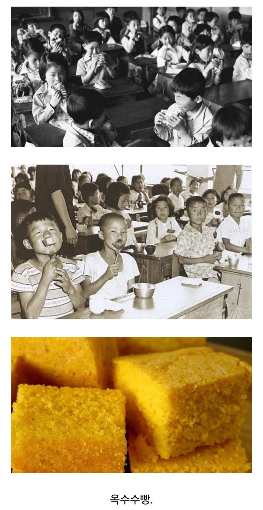

아재판독 학교 급식 메뉴.jpg
댓글
저것도 먹지못해 냇물로 배를 채우곤햇지 껄껄
ㄹㅇ 저거도 귀함
자네도 고생꽤햇구먼....
검정고무신에서나 봤는데
건포도 들어갔어?
그런 고급재료는 못넣어
오늘내일하시겠는데여
부족해서 밖에 돌아다니는 메뚜기랑 개구리를 잡아먹곤 했지
저게뭐야 근데 맛있어 보임ㅋㅋ
아재아니라 할아버지라고 불리시는 분들 식사 아님..?
나때 국민학교가 초등학교로 바뀌었지
옥수수빵 미국와서 먹었는데 살짝 달고 짜고해서 맛있음. 근데 기름져서 그런지 많이는 못먹겠더라. 저거 보면 그맛이 연상되는데 다르겠지?
할배판독기 아니냨ㅋㅋㅋㅋ
저건 아재가 아니라 할배지...
요즘은 학교 다닐때 한 반에 40명 넘었으면 아재고
당시에 꼭 당번이 당번함 같은 큰 상자 들고 와서 급식 우유랑 같이 나눠줬지... 어떤 날은 따끈해서 진짜 맛있고, 어떤 날은 좀 식어서 퍽퍽했는데 그 맛이 그립긴 하네...
옥수수빵으로도 배가 안차는 날에는 학교 앞에서 팔던 병아리 사서 하나씩 먹곤 했어...
저정도면 6, 70년대에 국민학교 다녀야하는거아니여? ㅋㅋㅋㅋ
어르신들이 전통시장 다녀오시면 가끔 사오시던거네
아재시절엔 급식 없었다니까
도시락싸오지
옥수수빵은 검정고무신 시절아님ㄱ
옥수수빵 먹을정도면 최소 60대임
이건 진짜 60대잖아ㅋㅋㅋㅋㅋㅋ
도시락통에 모래를 담아놓고 도시락 싸온척 하며 점심시간에 수돗가 가서 물배채우는게 정석아님?
이건 진짜 으르신이자너
가루우유는 왜 없?
라는 추억을 가진 분들은 지금 무덤에 있을거 같은데요...
옥수수빵 정도면
손주 본 사람도 많음